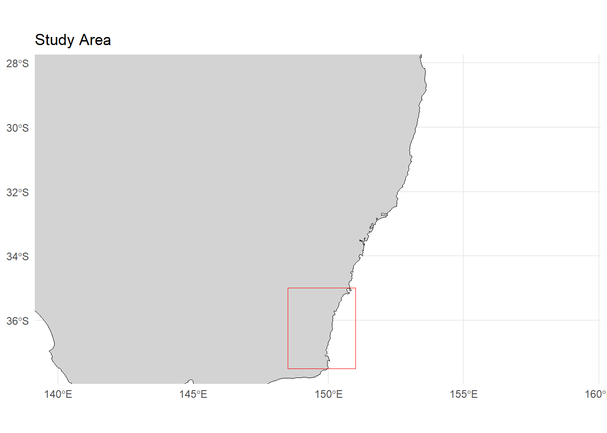
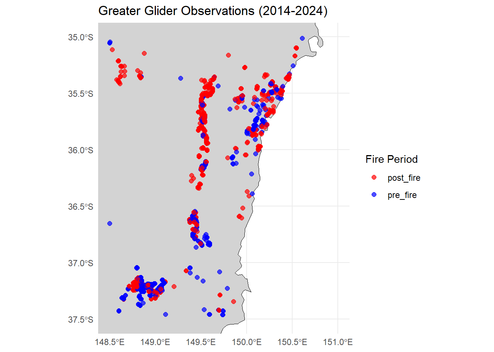
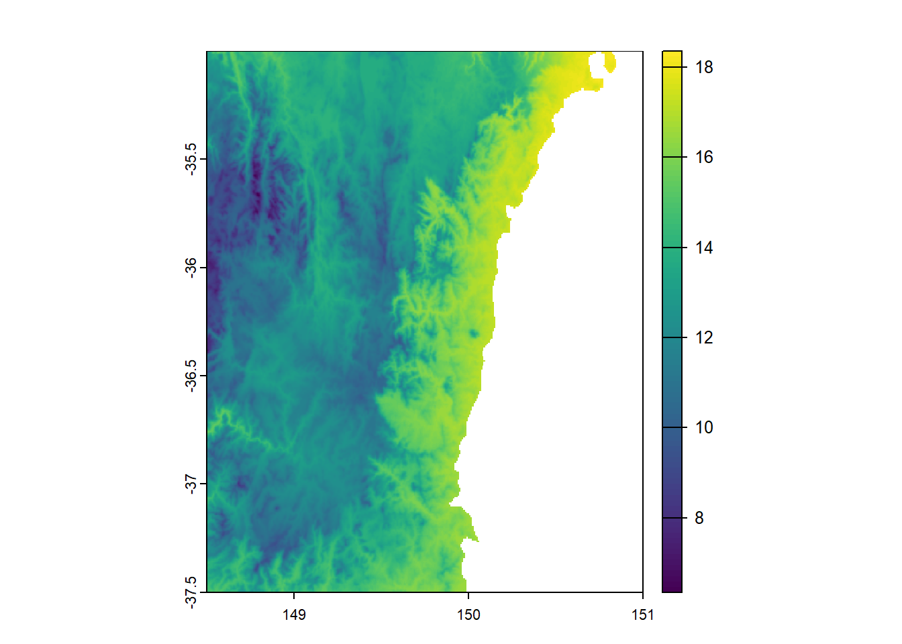
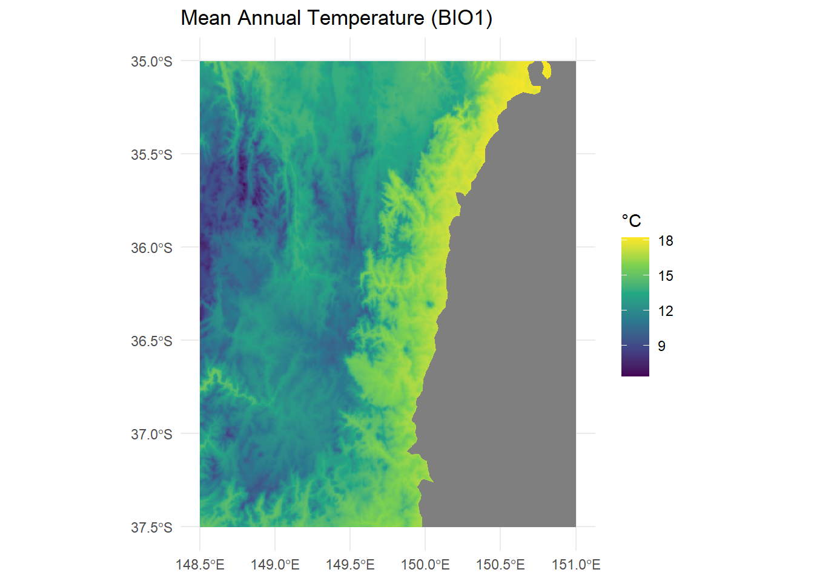
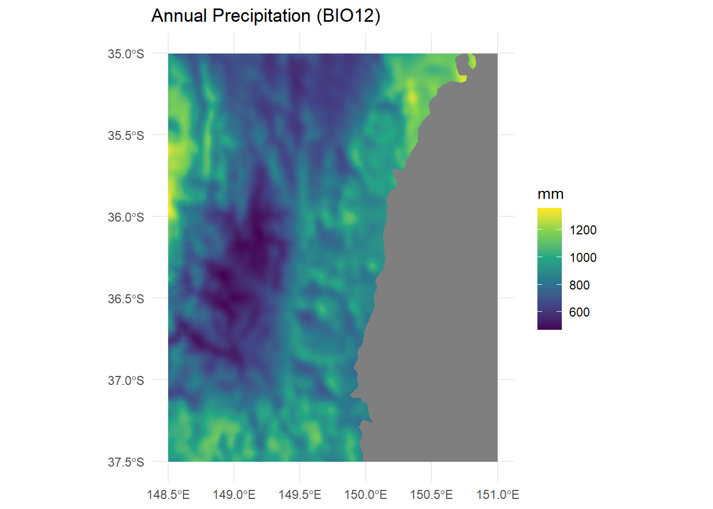
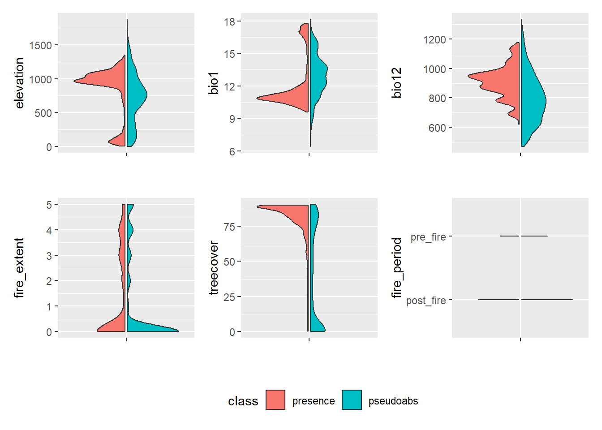
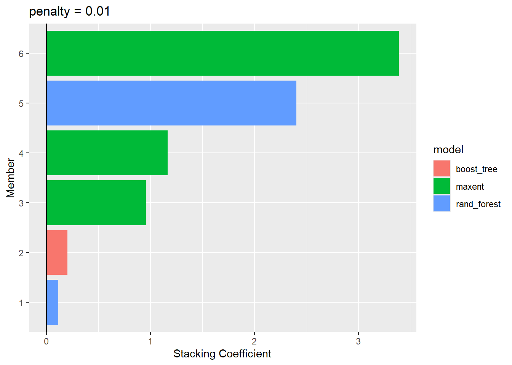
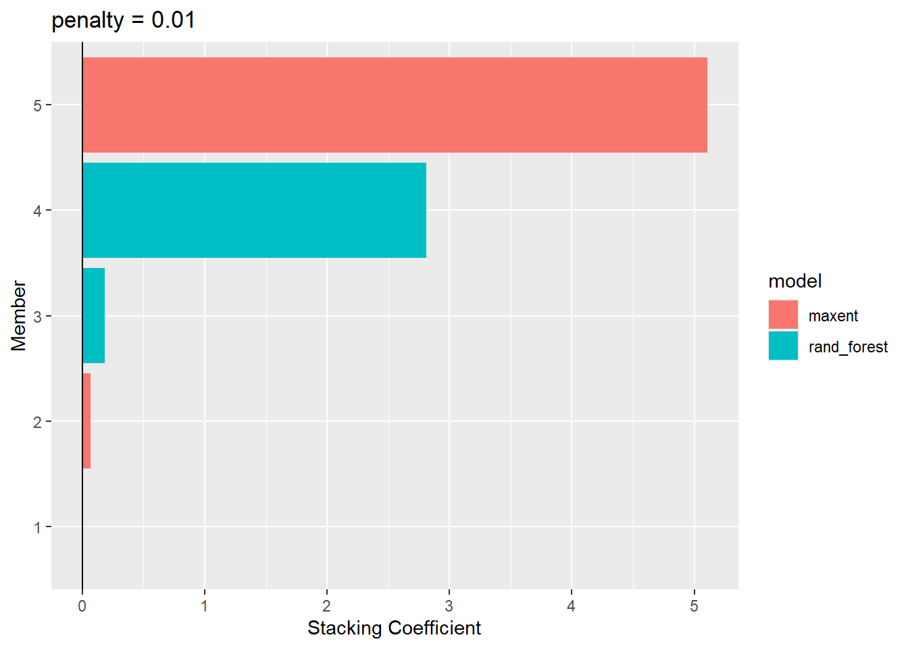
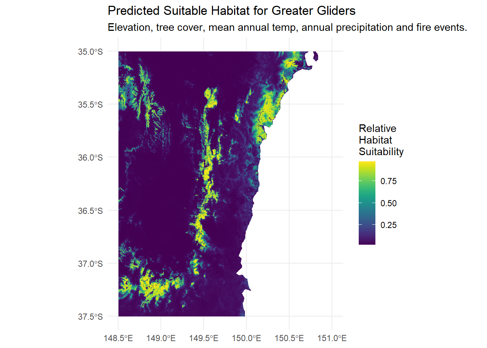
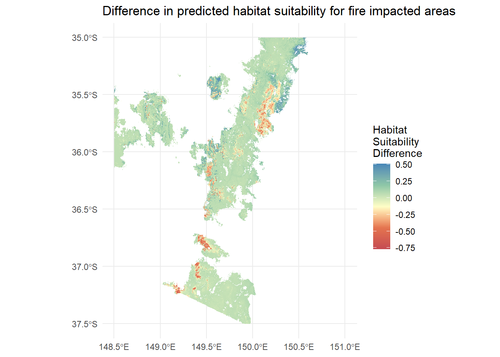

library(galah)
library(tidyverse)
library(tidymodels)
library(tidysdm) # devtools::install_github("EvolEcolGroup/tidysdm")
library(terra)
library(tidyterra)
library(here)
library(sf)
library(ozmaps)
library(elevatr)
library(geodata)
library(stacks)

Bushfires are a frequent and natural aspect of Australia’s ecosystems. Our flora and fauna have evolved along side fire, some plants even require fire to germinate and regenerate 1.
Aboriginal and Torres Strait Islander people have expertly used fire for tens of thousands of years to care for Country, managing vegetation, reducing wildfire risk, and fostering biodiversity2 3 This deep connection between fire and the environment continues to influence modern land management practices today. The disruption of these practices since colonisation have increased the risk of out of control bushfires due to the build up of fuel loads, and introduction of invasive plants.4
In 2019-2020 we experienced one of the most catastrophic bushfire seasons on record in Australia, with approximately 19 million hectares burnt and approximatelly 3 billion animals killed or displaced by the fires.5 Over 900 species of plant and animals were severely impacted by the fires6. Of the 19 million hectares burnt in those fires, 12.6 million were primarily forest and bushland.
In this post we will explore the impact of the 2019-2020 bushfires on a population of Greater gliders (Petauroides volans), an arboreal, marsupial species found all along the east coast from Australia, from Southern Queensland all the way down into Victoria. They inhabit tall, hollow bearing trees in eucalypt forests. Unfortunately they are increasingly under threat due to habitat destruction, climate change and intense bushfires. To investigate the impact the 2019/20 Bushfires had on Glider distribution in south-est NSW, we will use a species distribution model (SDM) to investigate what impact, if any, they had on the Gliders. We will then use a general linear model to statistically test whether there is a difference in greater glider observations before vs after the 2019-2020 bushfires.
Background
The Southern Greater Glider (Petauroides volans) is Australia’s largest gliding marsupial, found in tall eucalypt forests along the east coast, from Queensland to Victoria. They are an endagered nocturnal, tree-dwelling herbivore that primarily feed on eucalyptus leaves, much like the Koala! They grow up to 1m long from head to tail and glide up to 100 metres through the canopy. Gliders den in hollow bearing trees and can have multiple dens in their home range.
Left: Petauroides volans ( Josh Bowell | CC-BY-NC 3.0 (Au)), Right: Petauroides volans (David Sinnott | CC-BY-NC 4.0 (Int))
To begin, we can load some packages.
Downloading Greater Glider Data
We’re going to be focusing on a region of South-East NSW. Let’s establish a bounding box around our area and pull in a map of Australia for later rendering and working with our rasters.

Now lets download Greater Glider records in a 10-year time period (2014-2024) which captures observations of greater gliders before and after the 2019-2020 bushfires.
galah_config(email = "your-email-here") # Registered ALA email
# Collect all greater glider records between 2014 and 2024 for the region we defined
gliders <- galah_call() |>
identify("Petauroides volans") |>
filter(year >= 2014 & year <= 2024) |>
galah_apply_profile(ALA) |>
galah_geolocate(se_nsw_bbox, type = "bbox") |>
atlas_occurrences()We will also add a new column in that will allow us to to see if a Glider record was seen before or after the fires.
The 1st of December 2019 has been selected as the cut-off as it marks the beginning of the peak of the bushfire season, by this point the worst of the bushfires were underway and we can consider all observations taken after that point to be “post-fire” as there would have been very few observations being done during this period because of the fires.
# Classify each glider record as pre or post fire
gliders <- gliders |>
mutate(fire_period = if_else(eventDate < as.Date("2019-12-01"), "pre_fire", "post_fire"))
# Create an sf object so we can draw it later
gliders_sf <- gliders |>
st_as_sf(coords = c("decimalLongitude", "decimalLatitude")) |>
st_set_crs(4326)
Now we’ve got a nice dataset of Greater Glider observations over a period of time in the area we’re interested with, classified by pre or post fire. Now, we’ll start pulling in our raster data to help build up our model.
Preparing our rasters
This post will make heavy use of raster files7.
We’ll be downloading several raster layers in order to create a robust model for Greater Gliders. Greater glider distribution is largely determined by availability of suitable habitat (tree cover and hollow bearing trees), elevation and climate data (precipitation and temperature). We will be downloading layers to supply each of these to the model to develop a reasonable prediction surface of Glider habitat. From this we will be able to reasonably investigate the impact that the bushfires had on predicted glider presence.
We will be downloading tree cover layers, elevation layers, climate layers and fire extent layers.
Raster Preparation steps
For each raster, we will perform a common series of modifications; cropping them to our region of interest, making sure they are all in the same projection and then resampling to make them have the same resolution.
This process is slightly repetitive, but when working with spatial data for modelling, it is critical that rasters are in the same dimensions, resolution and projection. Otherwise, the raster pixels won’t align with each other!
Because of the repetitive nature I won’t be detailing the exact steps for each raster (except where they deviate) and will instead lay out the common steps here:
- Rename the layers to something more sensible
- Crop them to match our region
- Mask out the ocean so that it does not skew our model
- Resample each layer to have matching resolutions
Download Elevation Raster
The first raster we’ll be grabbing is an elevation raster for our defined region, fortunately for us the {elevatr} package provides us with the handy get_elev_raster() function. When we call it we pass in our bounding box from earlier and get elevation data (in metres) back for our region!
Since we’ll be using multiple rasters in this post, we need to establish a “main” raster: one that defines our coordinate reference system (CRS) and resolution. The elevation raster has the coarsest resolution, so we’ll use it as our reference for aligning all other rasters.
# Download the elevation raster
elevation_data <- get_elev_raster(locations = bbox_sf, z = 9, prj = "EPSG:4326")
# Masking allows us to remove raster information we aren't interested in using
# the mask function. For our model we will use the land boundaries of Australia
elevation_aligned <- elevation_data |>
terra::mask(aus)
# elevation_aligned is now a RasterLayer, so lets turn it back into a SpatRaster
elevation_aligned <- terra::rast(elevation_aligned)
# Ensure that it's in our desired projection
elevation_aligned <- terra::project(elevation_aligned, "EPSG:4326")
# Crop it down to our bounding box
elevation_aligned <- terra::crop(elevation_aligned, bbox_ext)
# This column is different everytime, but it's always of the format file<UID>
# So we'll just rename it to elevation for simplicities sake
colname <- names(elevation_aligned)
names(elevation_aligned) <- str_replace_all(names(elevation_aligned),
colname,
"elevation")Download Tree Cover Data
Next we’ll be downloading our tree cover data. This dataset is in the form of a percentage (0 = no cover, 100 = complete tree cover). Because our data set crosses over two regions, we will be stitching together two rasters that cover central NSW to the east coast, and we will then crop them down to our area of focus.
This tree cover data is satellite data from 2010 by Hansen et al, full details can be found here.
download.file("https://glad.umd.edu/Potapov/TCC_2010/treecover2010_30S_140E.tif", destfile="treecover2010_30S_140E.tif")
download.file("https://glad.umd.edu/Potapov/TCC_2010/treecover2010_30S_150E.tif", destfile="treecover2010_30S_150E.tif")Now that we have the files, let’s perform our common steps for tidying up the rasters.
# Load the raster
tree_cover_rast_150e_2010 <- rast("treecover2010_30S_150E.tif")
# Check the names of the layers in the raster
names(tree_cover_rast_150e_2010)
# In this case we have one layer, and it's titled "Layer_1", which is not very helpful. So we'll change that to a more suitable name
names(tree_cover_rast_150e_2010) <- str_replace_all(names(tree_cover_rast_150e_2010),
"Layer_1",
"treecover")
# See the change has worked
names(tree_cover_rast_150e_2010)
# Let's repeat the process for the 140E raster
tree_cover_rast_140e_2010 <- rast("treecover2010_30S_140E.tif")
names(tree_cover_rast_140e_2010)
names(tree_cover_rast_140e_2010) <- str_replace_all(names(tree_cover_rast_140e_2010),
"Layer_1",
"treecover")
names(tree_cover_rast_140e_2010)
# Crop our raster files to our bounding box extent
tree_cover_rast_150e_2010 <- tree_cover_rast_150e_2010 |>
terra::crop(bbox_ext)
tree_cover_rast_140e_2010 <- tree_cover_rast_140e_2010 |>
terra::crop(bbox_ext)
# Merge the two rasters into a single raster
tree_cover_2010 <- merge(tree_cover_rast_140e_2010, tree_cover_rast_150e_2010)
# Resample our tree cover to the resolution of the elevation data
tree_cover_2010 <- terra::resample(tree_cover_2010, elevation_aligned)Best practice: When working with spatial data we tend to use up a lot of memory! That’s a big reason why we are performing these cropping steps, so that we can use up the least amount of memory necessary to get our model to function. Because of this, after we have stitched our two rasters into our composite tree_cover_2010 raster, we can safely delete the other two as we will no longer require them.
# We can now safely delete the first two raster files to save memory
rm(tree_cover_rast_140e_2010)
rm(tree_cover_rast_150e_2010)
Download Climate Rasters
We’ll be using climate projections from CHELSA, specifically the UKESM1-0-LL SSP3-7.9 model for 2011-2040. This dataset provides bioclimatic variables at a reasonable resolution, making it a great choice for our analysis.
We’ll be focusing on two key variables:
- Bio1: Mean Annual Temperature
- Bio12: Annual Precipitation
Greater gliders are sensitive to temperature and precipitation changes, and so these two variables are a sensible set to incorporate into our model to help understand their range.
Let’s download and load the two raster files, and perform our clean up steps.
# Download our two raster files
download.file("https://os.zhdk.cloud.switch.ch/chelsav2/GLOBAL/climatologies/2011-2040/UKESM1-0-LL/ssp370/bio/CHELSA_bio1_2011-2040_ukesm1-0-ll_ssp370_V.2.1.tif", destfile="CHELSA_bio1_2011-2040_ukesm1-0-ll_ssp370_V.2.1.tif", mode="wb")
download.file("https://os.zhdk.cloud.switch.ch/chelsav2/GLOBAL/climatologies/2011-2040/UKESM1-0-LL/ssp370/bio/CHELSA_bio12_2011-2040_ukesm1-0-ll_ssp370_V.2.1.tif", destfile="CHELSA_bio12_2011-2040_ukesm1-0-ll_ssp370_V.2.1.tif", mode="wb") bio1 <- rast("CHELSA_bio1_2011-2040_ukesm1-0-ll_ssp370_V.2.1.tif")
bio12 <- rast("CHELSA_bio12_2011-2040_ukesm1-0-ll_ssp370_V.2.1.tif")# Crop to our bounding box extent
bio1 <- terra::crop(bio1, bbox_ext)
# Mask out the oceans
bio1 <- mask(bio1, aus)
# Check the name, and replace the horrible large name with something short and sweet
names(bio1)[1] "bio1"names(bio1) <- str_replace_all(names(bio1),
"CHELSA_bio1_2011-2040_ukesm1-0-ll_ssp370_V.2.1",
"bio1")
# Resample our bioclim variable to the resolution of the elevation raster
bio1 <- terra::resample(bio1, elevation_aligned)
# Repeat for our BIO12 raster
bio12 <- terra::crop(bio12, bbox_ext)
bio12 <- mask(bio12, aus)
names(bio12)[1] "bio12"names(bio12) <- str_replace_all(names(bio12),
"CHELSA_bio12_2011-2040_ukesm1-0-ll_ssp370_V.2.1",
"bio12")
bio12 <- terra::resample(bio12, elevation_aligned)

Now our climate rasters are ready to use, and we only need to incorporate the fire extent raster.
Download our Fire Extent Raster
Prepare Fire Extent Raster
To assess the impact of the 2019-2020 Black Summer Bushfires, we need a raster that maps burnt areas across NSW for that period. The NSW Government’s Fire Extent and Severity Mapping (FESM) dataset provides this information, detailing the extent and severity of burnt areas across the state.
The dataset is available here: Fire Extent and Severity Mapping (FESM) 2019/20.
We will download the FESM v3-data in IMG and TIFF format, then extract the .tif file to our working directory.
Note: While the download itself is only several hundred megabytes, uncompressed the .tif file is very large (10.3 GB) so please keep this in mind before downloading!
Processing the fire raster
To save processing time and memory, we will be cropping this large raster down to just our desired range. Unlike our previous rasters, this dataset is NOT in WGS84 and so we will need to transform it a little differently to our previous rasters:
- Create a SpatExtent that matches our study area
- Reproject that extent to the projection of our fire map.
- Create a bounding box of that extent in that projection.
- Crop our fire extent raster in that projection.
- Reproject the now cropped fire extent raster to the WGS84.
These steps allow us to skip a lot of the processing time needed to reproject the entire raster into WGS84 and then cropping down, instead cropping and then reprojecting.
What each value means in the fire extent raster
The dataset categorises fire severity using the following range of values:
- 0 - unburnt (0% canopy and understory burnt)
- 1 - Reserved (Experimental category, is not used in raster right now)
- 2 - Low (> 10% burnt upderstory, >90% green canopy)
- 3 - Moderate (20-90% canopy scorch)
- 4 - High (> 90% canopy scorched, <50% canopy consumed)
- 5 - Extreme (>50% canopy biomass consumed)
#Load the raster
fire_extent <- rast("cvmsre_NSW_20192020_ag1l0.tif")
# We are going to make our extent a polygon polygon first
bbox_ext_vect <- terra::as.polygons(bbox_ext, crs = "EPSG:4326")
# Reproject the bounding box to the same projection of fire_extent
bbox_ext_vect_proj <- terra::project(bbox_ext_vect, crs(fire_extent))
# Create an extent of that bbox projection
bbox_ext_proj <- terra::ext(bbox_ext_vect_proj)
# Crop fire_extent using the reprojected bbox
fire_extent <- terra::crop(fire_extent, bbox_ext_proj)
# Reproject our fire extent to WGS84
fire_extent <- terra::project(fire_extent, "EPSG:4326")
# Then crop again to align it with our other raster files
fire_extent <- terra::crop(fire_extent, bbox_ext)Now that we’ve reduced this very large raster down, all we need to do is rename the layer, resample to our desired resolution and then mask out the oceans.
names(fire_extent) <- str_replace_all(names(fire_extent),
"Layer_1",
"fire_extent")
# Resample and round
fire_extent <- terra::resample(fire_extent, elevation_aligned)
fire_extent <- round(fire_extent)
# Mask out the ocean
fire_extent <- fire_extent |>
terra::mask(aus)
Finally, we will add a new column to our Greater Glider observation dataset, in which we will record the fire severity category at each glider’s recorded location.
To achieve this, we will extract the fire severity values from the processed fire extent raster at the coordinates where Greater Gliders were observed.
gliders_sf$burnt <- terra::extract(fire_extent, vect(gliders_sf), ID = FALSE)Now we have all our rasters ready to go, we can begin the modelling process!
Building our model
If you’re new to species distribution modeling (SDM) or want a deeper dive into the details, I highly recommend checking out this other fantastic ALA labs post that dives into the nitty gritty for each step: An introduction to species distribution modelling using {tidysdm} & {tidymodels}. This post is focused more with working with rasters, applying them to use in an SDM and exploring the output of the model statistically.
Combining our rasters
To begin we need to combine all the raster datasets we’ve prepared so far. This will allow our model to extract environmental values at each Glider occurrence (or absence).
combined_rasters <- c(elevation_aligned, bio1, bio12, fire_extent, tree_cover_2010)Now we have a single raster with multiple layers detailing:
- Elevation
- Mean annual temperature (BIO1)
- Annual precipitation (BIO12)
- Extent of the 2019 bushfires
- Tree cover
Thinning our data
Since raster cells have a fixed resolution, we want to avoid multiple glider observations within a single cell (because multiple observations below this level won’t matter anyway). We’ll use {tidysdm}’s thin_by_cell() function to make sure only one glider record exists per raster grid cell.
# see results of thinning
gliders_thin <- tidysdm::thin_by_cell(gliders_sf,
raster = combined_rasters)Pseudo-absences and Accurate Pre/Post-Fire Columns
What we currently have is a list of actual observations. Unfortunately in SDM we don’t often have true absence data to work with, just records of actual observations. To work around this, we will generate a bunch of pseudo-absences based off our combined raster.
To accurately assess the impact of the 2019–2020 Black Summer Bushfires on Greater Glider presence using a GLM, we need both presence and absence data. However, we lack a raster dataset that explicitly distinguishes pre- and post-fire habitat suitability, which is used by the sample_pseudoabs() function to generate pseudo-absence locations.
To overcome this, we will randomly assign 50% of the pseudo-absence records to the pre-fire period and the other 50% to the post-fire period. This artificial split ensures that our model includes pseudo-absence data for both timeframes, allowing us to analyze changes in glider distribution before and after the fires.
Once the pseudo-absence records are generated, we will reassign the correct pre- and post-fire values to our actual presence observations in the dataset.
# Generate the pseudoabsence records
gliders_pseudoabs <- tidysdm::sample_pseudoabs(
gliders_thin,
n = 3 * nrow(combined_rasters),
raster = combined_rasters,
method = c("dist_min", km2m(5)))
# Calculate the number of rows so we can generate random categories
n_pseudo <- nrow(gliders_pseudoabs)
# Generate random categories for our pseudoabsences
pseudo_categories <- sample(c("pre_fire", "post_fire"), size = n_pseudo, replace = TRUE)
# Get the real categories from our original data
real_categories <- gliders_thin |>
select(fire_period) |>
mutate(class = "presence")
# Put the pseudo categories into our pseudoabsences
gliders_pseudoabs <- gliders_pseudoabs |>
mutate(fire_period = pseudo_categories)
# Extract the tree cover, elevation values and climate values at the pseudoabs points
gliders_events <- gliders_pseudoabs |>
bind_cols(
terra::extract(combined_rasters,
gliders_pseudoabs,
ID = FALSE))
# Join the real fire_period category from the original records to overwrite our fake ones
gliders_events <- gliders_events |>
st_join(real_categories |> select(fire_period), left = TRUE) |>
mutate(fire_period = coalesce(fire_period.y, fire_period.x)) |> # Overwrite only if match found
select(-fire_period.x, -fire_period.y) # Remove redundant columns
# Remove any NA records
gliders_events <- na.omit(gliders_events)Let’s select our predictor variables to filter out all the unnecessary columns in our data frame. We will then turn our pre/post fire column into a numeric value for our modelling and statitical analysis later.
# Select our predictor variables
predictor_vars <- c("elevation", "bio1", "bio12", "fire_extent", "treecover")
# Select all the columns we're interested in
gliders_filtered <-
gliders_events |>
select(all_of(c(predictor_vars, "class", "fire_period")))
# Change fire period into a numeric value
gliders_filtered <- gliders_filtered |>
mutate(fire_period = if_else(fire_period == "post_fire", 1, -1))
gliders_filtered$fire_period <- as.numeric(gliders_filtered$fire_period)Tuning and Running the Model
Now that we’ve cleaned and prepared our data and generated our pseudoabsence data, we’re ready to start modelling!
Rather than using a single mdoel, we’ll be training multiple models, investigating their relative performance, and then combining them into an ensemble model that will help make our final prediction a bit more robust.
Training and testing
Firstly let’s split our glider presence/pseudoabsence data into training and testing datasets. This allows us to train the model on one subset of the data, while evaluating it’s performance on the other subset of the data. In order to improve our model and try and prevent overfitting, we’ll use spatial block cross-validation. Spatial block cross validation divides the study area into spatial blocks and ensures our model is tested on spatially independent data, making it’s predictions more general.
# set training and testing data
set.seed(100)
# Create training and testing datasets
gliders_split <-
gliders_filtered |>
initial_split()
gliders_split<Training/Testing/Total>
<5886/1962/7848>gliders_train <- training(gliders_split)
gliders_trainSimple feature collection with 5886 features and 7 fields
Geometry type: POINT
Dimension: XY
Bounding box: xmin: 148.5 ymin: -37.49949 xmax: 150.828 ymax: -35.00099
Geodetic CRS: WGS 84
# A tibble: 5,886 × 8
elevation bio1 bio12 fire_extent treecover class fire_period
<dbl> <dbl> <dbl> <int> <dbl> <fct> <dbl>
1 899 12.3 739. 0 0 pseudoabs 1
2 1141 10.8 779. 0 86.9 presence 1
3 1310 9.45 775. 2 69.2 pseudoabs -1
4 958 11.0 772. 0 23.2 pseudoabs -1
5 1008 11.7 705. 0 0.124 pseudoabs 1
6 821 12.1 651. 0 0.234 pseudoabs 1
7 930 11.8 616. 0 0 pseudoabs 1
8 755 13.3 675. 0 0 pseudoabs -1
9 703 12.6 902. 0 88.1 pseudoabs -1
10 909 11.5 856. 0 78.8 presence 1
# ℹ 5,876 more rows
# ℹ 1 more variable: geometry <POINT [°]>gliders_test <- testing(gliders_split)
gliders_testSimple feature collection with 1962 features and 7 fields
Geometry type: POINT
Dimension: XY
Bounding box: xmin: 148.5 ymin: -37.49828 xmax: 150.8171 ymax: -35.00099
Geodetic CRS: WGS 84
# A tibble: 1,962 × 8
elevation bio1 bio12 fire_extent treecover class fire_period
<dbl> <dbl> <dbl> <int> <dbl> <fct> <dbl>
1 1092 10.5 838. 0 76.7 presence 1
2 937 10.9 947. 0 88.5 presence -1
3 1022 10.4 937. 0 90 presence -1
4 1000 10.4 926. 0 90 presence -1
5 1233 10.3 889. 0 76.5 presence -1
6 28 17.2 938. 4 64.9 presence -1
7 1075 11.0 866. 3 86.0 presence 1
8 948 10.7 1023. 0 86.4 presence -1
9 1024 10.0 1108. 0 90 presence -1
10 1090 11.0 792. 4 89.7 presence 1
# ℹ 1,952 more rows
# ℹ 1 more variable: geometry <POINT [°]># Perform Cross validation
gliders_cv <- spatial_block_cv(gliders_train, v = 5)Now we’re going to create a new recipe for our model, this will explain how our response variable class (presence or absence) is effected by each predictor variable (elevation, bio1, bio12, treecover, fire_extent and fire_period).
gliders_recipe <- recipe(
gliders_train,
formula = class ~ elevation + bio1 + bio12 + treecover + fire_extent + fire_period
)Rather than relying on a single model, we’ll train up four and compare their performance. These models are:
- Generalised Linear Model
- Random Forest
- Gradient Boosting Machine
- Maximum entropy
We will later build an ensemble of the best models
gliders_models <-
workflow_set(
preproc = list(default = gliders_recipe), # Use the same recipe for all
models = list(
glm = sdm_spec_glm(), # Generalised Linear Model
rf = sdm_spec_rf(), # Random Forest
gbm = sdm_spec_boost_tree(), # Gradient Boosting Machine
maxent = sdm_spec_maxent() # Maximum Entropy
),
cross = TRUE
) |>
option_add(control = control_ensemble_grid())Now we’ll tune our models using the cross validation blocks we generated earlier. This step helps us find the best model parameters by testing different variations and selecting the ones that perform best. This plot will give us a visualisation of the model performance.
set.seed(9999)
# Tune the model using cross validation
gliders_models_tune <-
gliders_models |>
workflow_map("tune_grid",
resamples = gliders_cv, # Use our cross-validation blocks for tuning
grid = 6, # number of tuning iterations
metrics = sdm_metric_set(), # Evaluate model performance
verbose = TRUE,
control = stacks::control_stack_grid()
)autoplot(gliders_models_tune)
set.seed(98765)Because we are using a collection of models, we can use stacks to combine the best models into an ensemble model that will help improve accuracy and generalisation. We will see a plot at the end detailing how much each model is contributing to the ensemble.
gliders_stacked <-
stacks() |> # initialize the model stack
add_candidates(gliders_models_tune) |> # Add the tuned models
blend_predictions() |> # Blend their predictions
fit_members() # Fit the final model
# Visualise each models contribution
autoplot(gliders_stacked, type = "weights")
Now that we have our stacked ensemble model, it’s time to see how well it performs on unseen test data. This step helps us validate the model’s accuracy and assess how well it generalizes to new observations.
# Predict probability of presence
gliders_test_predictions <-
gliders_test %>%
bind_cols(predict(gliders_stacked, .,
type = "prob",
save_pred = TRUE))
# Evaluate performance
gliders_test_predictions |>
sdm_metric_set()(truth = class, .pred_presence)# A tibble: 3 × 3
.metric .estimator .estimate
<chr> <chr> <dbl>
1 boyce_cont binary 0.971
2 roc_auc binary 0.966
3 tss_max binary 0.814# Give a final classification
gliders_test_predictions_class <-
gliders_test %>%
bind_cols(predict(gliders_stacked, .,
type = "class",
save_pred = TRUE))Generating the Final Raster
Now we’ve got a trained and tested model, we can now almost finally make our predictions!
The last step we need to do is create a pseudo “fire-period” raster. We need this raster because our model only evaluates the impact of fire_period on the glider records, we didn’t have the need a raster of fire_period previously, however because we are producing a final raster, we DO need a raster that we can sample from in order to produce that prediction.
# Create an empty raster with the same dimensions as our combined raster
presence_raster <- rast(combined_rasters, nlyr = 1)
values(presence_raster) <- NA
# Rename the layer for clarity
names(presence_raster) <- str_replace_all(names(presence_raster),
"lyr1",
"fire_period")
# Convert glider observations into a vector to be sampled
gliders_vect <- vect(gliders_filtered)
# Rasterize the fire period from the glider points
fire_period_raster <- rasterize(gliders_vect, presence_raster, field = "fire_period", fun = "first")
names(fire_period_raster) <- str_replace_all(names(fire_period_raster),
"first",
"fire_period")
# Assign pre/post values to the cells
# Pre-fire
fire_period_raster[is.na(fire_period_raster) & (fire_extent == 0 | fire_extent == 1)] <- -1
# Post-fire
fire_period_raster[is.na(fire_period_raster) & !(fire_extent == 0 | fire_extent == 1)] <- 1
# Add this fire period raster into our raster stack
combined_rasters <- c(combined_rasters, fire_period_raster)Now we are finally ready to perform our final prediction!
# Perform our final prediction!
prediction_present <- predict_raster(gliders_stacked,
combined_rasters,
type = "prob",
wopt = list(steps=32))The final plot
Now let’s plot it, and have a look at our map detailing habitat suitability for our gliders!
ggplot() +
geom_spatraster(data = prediction_present,
aes(fill = .pred_presence)) +
scale_fill_whitebox_c(palette = "viridi",
na.value = NA) +
guides(fill = guide_colorbar(title="Relative\nHabitat\nSuitability")) +
labs(title="Predicted Suitable Habitat for Greater Gliders", subtitle = "Elevation, tree cover, mean annual temp, annual precipitation and fire events.") +
pilot::theme_pilot(grid="hv") +
theme(
legend.text = element_text(hjust = 0.5)) +
theme_minimal()<SpatRaster> resampled to 500556 cells.
Finishing up: Statistical Analysis
Now let’s investigate the relative effect that each variable had on the final prediction raster:
# Join the prediction raster and our other rasters
final_raster <- c(prediction_present, combined_rasters)
# Construct a GLM
lm <- glm(.pred_presence ~ elevation + bio1 + bio12 + fire_extent + treecover + fire_period, data = final_raster)
summary(lm)
Call:
glm(formula = .pred_presence ~ elevation + bio1 + bio12 + fire_extent +
treecover + fire_period, data = final_raster)
Coefficients:
Estimate Std. Error t value Pr(>|t|)
(Intercept) -1.421e+00 4.361e-03 -325.9 <2e-16 ***
elevation 5.086e-04 1.366e-06 372.5 <2e-16 ***
bio1 7.457e-02 2.440e-04 305.7 <2e-16 ***
bio12 1.857e-04 9.228e-07 201.2 <2e-16 ***
fire_extent -3.396e-02 1.892e-04 -179.5 <2e-16 ***
treecover 3.174e-03 4.641e-06 683.9 <2e-16 ***
fire_period 5.919e-02 3.777e-04 156.7 <2e-16 ***
---
Signif. codes: 0 '***' 0.001 '**' 0.01 '*' 0.05 '.' 0.1 ' ' 1
(Dispersion parameter for gaussian family taken to be 0.03670401)
Null deviance: 145919 on 2825491 degrees of freedom
Residual deviance: 103707 on 2825485 degrees of freedom
(1391370 observations deleted due to missingness)
AIC: -1319473
Number of Fisher Scoring iterations: 2Breaking down the stats
This output can be a bit confusing, so let’s look at the key takeaways:
The estimate tells us how much each variable increases or decreases the likelihood of finding a glider:
- Positive estimate: Higher values of this variable increase the likelihood of glider presence.
- Negative estimate: Higher values of this variable decrease the likelihood of glider presence.
- Larger absolute values mean a stronger influence.
The effect size (t-value) tells us how strong each variable is on the final prediction. The absolute value of the effect size tells us it’s strength, and whether it’s positive or negative tells us whether or not it’s associated with increased glider predicition chance, or decreased glider prediction chance.
Conclusion
So what does our model actually say about Greater Glider distribution in South-East NSW?
Tree cover is critical - Tree cover is the strongest predictor of glider presence.
Elevation and temperature are big predictors - Greater Gliders appear to prefer higher elevations and (relative to the surrounds) warmer annual temperatures.
Rainfall plays a part - More precipitation increases the likelihood of glider presence, which is not a big surprise considering the relationship between precipitation and tree cover, and precipitation and elevation!
But from our research we alraedy had some idea of these, so let’s look at the variables we’re actually interested in, fire!
Severe fires have a negative impact in glider distribution - The more extreme the fire events in the 2019 bushfire season, the less likely we were to see gliders present. Fires that are too intense can scorch and destroy the critical habitat needed by Greater Gliders
The pre vs post-fire effect is interesting. We saw a slight increase in post-fire glider presence in our model. This could be due to a number of factors, perhaps new tree hollows were formed in the fires, perhaps there increased survey efforts, or surviving gliders being more visible due to reduced canopy cover, or even just more data entering into the ALA
This model gives us a solid look at how Greater Gliders were affected by the 2019 fires. While fires can sometimes create tree hollows, our model suggests that severe fires disrupted habitat more than they helped. This kind of modeling is super useful for conservation planning, helping us predict which areas need protection or restoration.
Change in habitat suitability for fire affected regions
As a final extra, let’s create a map looking at the difference in habitat suitability for pre and post fire regions. To do this we will generate two separate models, those with data before and those with data after and subtract the two habitat suitability maps from each other to see what has changed due to fire!
Expand for comparison map
# Collect all greater glider records in that period
gliders_2019 <- galah_call() |>
identify("Petauroides volans") |>
filter(year >= 2014 & year < 2020) |>
galah_apply_profile(ALA) |>
galah_geolocate(se_nsw_bbox, type = "bbox") |>
atlas_occurrences()--gliders_2019 <- gliders_2019 |>
mutate(year = year(eventDate), # Extract the year
month = month(eventDate))
gliders_sf_2019 <- gliders_2019 |>
st_as_sf(coords = c("decimalLongitude", "decimalLatitude")) |>
st_set_crs(4326)
# Rebuild gliders_sf_2019for visualisation later
gliders_sf_2019 <- gliders_2019 |>
st_as_sf(coords = c("decimalLongitude", "decimalLatitude")) |>
st_set_crs(4326)
gliders_thin <- tidysdm::thin_by_cell(gliders_sf_2019,
raster = combined_rasters)
gliders_pseudoabs <- tidysdm::sample_pseudoabs(
gliders_thin,
n = 3 * nrow(combined_rasters),
raster = combined_rasters,
method = c("dist_min", km2m(5)))
# Extract the tree cover, elevation values and climate values at the pseudoabs points
gliders_events_2019 <- gliders_pseudoabs |>
bind_cols(
terra::extract(combined_rasters,
gliders_pseudoabs,
ID = FALSE))
gliders_events_2019 <- na.omit(gliders_events_2019)
predictor_vars <- c("elevation", "bio1", "bio12", "treecover")
gliders_filtered_2019 <-
gliders_events_2019 |>
select(all_of(c(predictor_vars, "class")))
# set training and testing data
set.seed(100)
gliders_split_2019 <-
gliders_filtered_2019 |>
initial_split()
gliders_train <- training(gliders_split_2019)
gliders_test <- testing(gliders_split_2019)
gliders_cv <- spatial_block_cv(gliders_train, v = 5)
gliders_recipe <- recipe(
gliders_train,
formula = class ~ elevation + bio1 + bio12 + treecover
)
gliders_models <-
# create the workflow_set
workflow_set(
preproc = list(default = gliders_recipe),
models = list(
glm = sdm_spec_glm(), # the standard glm specs
rf = sdm_spec_rf(), # rf specs with tuning
gbm = sdm_spec_boost_tree(), # boosted tree model (gbm) specs with tuning
maxent = sdm_spec_maxent() # maxent specs with tuning
),
cross = TRUE # make all combinations of preproc and models
) |>
# tweak controls to store information needed later to create the ensemble
option_add(control = control_ensemble_grid())
set.seed(2345678) # for reproducability
gliders_models_tune <-
gliders_models |>
workflow_map("tune_grid",
resamples = gliders_cv,
grid = 6, # increase for more iterations
metrics = sdm_metric_set(),
verbose = TRUE,
control = stacks::control_stack_grid()
)
set.seed(123456)
gliders_stacked <-
stacks() |> # initialize the stack
add_candidates(gliders_models_tune) |> # add candidate members
blend_predictions() |> # determine how to combine their predictions
fit_members() # fit the candidates with nonzero stacking coefficients
gliders_test_predictions_2019 <-
gliders_test %>%
bind_cols(predict(gliders_stacked, .,
type = "prob",
save_pred = TRUE))
# predict class
gliders_test_predictions_class_2019 <-
gliders_test %>%
bind_cols(predict(gliders_stacked, .,
type = "class",
save_pred = TRUE))
prediction_present_2019 <- predict_raster(gliders_stacked,
combined_rasters,
type = "prob",
wopt = list(steps=32))
#####Post fire
# Collect all greater glider records in that period
gliders_2024 <- galah_call() |>
identify("Petauroides volans") |>
filter(year > 2019 & year <= 2024) |>
galah_apply_profile(ALA) |>
galah_geolocate(se_nsw_bbox, type = "bbox") |>
atlas_occurrences()--gliders_2024 <- gliders_2024|>
mutate(year = year(eventDate), # Extract the year
month = month(eventDate))
gliders_sf_2024 <- gliders_2024|>
st_as_sf(coords = c("decimalLongitude", "decimalLatitude")) |>
st_set_crs(4326)
# Rebuild gliders_sf_2024 for visualisation later
gliders_sf_2024 <- gliders_2024|>
st_as_sf(coords = c("decimalLongitude", "decimalLatitude")) |>
st_set_crs(4326)
gliders_2024$burnt <- terra::extract(fire_extent, vect(gliders_sf_2024), ID = FALSE)
gliders_thin <- tidysdm::thin_by_cell(gliders_sf_2024,
raster = combined_rasters)
gliders_pseudoabs <- tidysdm::sample_pseudoabs(
gliders_thin,
n = 3 * nrow(combined_rasters),
raster = combined_rasters,
method = c("dist_min", km2m(5)))
# Extract the tree cover, elevation values and climate values at the pseudoabs points
gliders_events_2024 <- gliders_pseudoabs |>
bind_cols(
terra::extract(combined_rasters,
gliders_pseudoabs,
ID = FALSE))
gliders_events_2024 <- na.omit(gliders_events_2024)
predictor_vars <- c("elevation", "bio1", "bio12", "treecover", "fire_extent")
gliders_filtered_2024 <-
gliders_events_2024 |>
select(all_of(c(predictor_vars, "class")))
combined_rasters <- combined_rasters[[predictor_vars]]
# set training and testing data
set.seed(100)
gliders_split_2024 <-
gliders_filtered_2024 |>
initial_split()
gliders_train <- training(gliders_split_2024)
gliders_test <- testing(gliders_split_2024)
gliders_cv <- spatial_block_cv(gliders_train, v = 5)
gliders_recipe <- recipe(
gliders_train,
formula = class ~ elevation + bio1 + bio12 + treecover + fire_extent
)
gliders_models <-
# create the workflow_set
workflow_set(
preproc = list(default = gliders_recipe),
models = list(
glm = sdm_spec_glm(), # the standard glm specs
rf = sdm_spec_rf(), # rf specs with tuning
gbm = sdm_spec_boost_tree(), # boosted tree model (gbm) specs with tuning
maxent = sdm_spec_maxent() # maxent specs with tuning
),
cross = TRUE # make all combinations of preproc and models
) |>
# tweak controls to store information needed later to create the ensemble
option_add(control = control_ensemble_grid())
set.seed(2345678) # for reproducability
gliders_models_tune <-
gliders_models |>
workflow_map("tune_grid",
resamples = gliders_cv,
grid = 6, # increase for more iterations
metrics = sdm_metric_set(),
verbose = TRUE,
control = stacks::control_stack_grid()
)
set.seed(123456)
gliders_stacked <-
stacks() |> # initialize the stack
add_candidates(gliders_models_tune) |> # add candidate members
blend_predictions() |> # determine how to combine their predictions
fit_members() # fit the candidates with nonzero stacking coefficients
gliders_test_predictions_2024 <-
gliders_test %>%
bind_cols(predict(gliders_stacked, .,
type = "prob",
save_pred = TRUE))
# predict class
gliders_test_predictions_class_2024<-
gliders_test %>%
bind_cols(predict(gliders_stacked, .,
type = "class",
save_pred = TRUE))
prediction_present_2024 <- predict_raster(gliders_stacked,
combined_rasters,
type = "prob",
wopt = list(steps=32))
habitat_diff <- prediction_present_2024 - prediction_present_2019
fire_mask <- (fire_extent >= 2) & (fire_extent <= 5)
# Apply mask to habitat difference raster
intersect_raster <- mask(habitat_diff, fire_mask, maskvalue=0)
ggplot() +
geom_spatraster(data = intersect_raster,
aes(fill = .pred_presence)) +
scale_fill_whitebox_c(palette = "muted", direction = -1,
na.value = NA) +
guides(fill = guide_colorbar(title="\nHabitat\nSuitability\nDifference")) +
labs(title="Difference in predicted habitat suitability for fire impacted areas") +
pilot::theme_pilot(grid="hv") +
theme(
legend.text = element_text(hjust = 0.5)) +
theme_minimal()
Expand for session info
─ Session info ───────────────────────────────────────────────────────────────
setting value
version R version 4.4.2 (2024-10-31 ucrt)
os Windows 11 x64 (build 22631)
system x86_64, mingw32
ui RTerm
language (EN)
collate English_Australia.utf8
ctype English_Australia.utf8
tz Australia/Sydney
date 2025-02-20
pandoc 3.2 @ C:/Program Files/RStudio/resources/app/bin/quarto/bin/tools/ (via rmarkdown)
─ Packages ───────────────────────────────────────────────────────────────────
package * version date (UTC) lib source
broom * 1.0.7 2024-09-26 [1] CRAN (R 4.4.2)
dials * 1.3.0 2024-07-30 [1] CRAN (R 4.4.2)
dplyr * 1.1.4 2023-11-17 [1] CRAN (R 4.4.2)
elevatr * 0.99.0 2023-09-12 [1] CRAN (R 4.4.2)
forcats * 1.0.0 2023-01-29 [1] CRAN (R 4.4.2)
galah * 2.1.0 2024-11-19 [1] CRAN (R 4.4.2)
geodata * 0.6-2 2024-06-10 [1] CRAN (R 4.4.2)
ggplot2 * 3.5.1 2024-04-23 [1] CRAN (R 4.4.2)
glmnet * 4.1-8 2023-08-22 [1] CRAN (R 4.4.2)
here * 1.0.1 2020-12-13 [1] CRAN (R 4.4.2)
htmltools * 0.5.8.1 2024-04-04 [1] CRAN (R 4.4.2)
infer * 1.0.7 2024-03-25 [1] CRAN (R 4.4.2)
lubridate * 1.9.4 2024-12-08 [1] CRAN (R 4.4.2)
Matrix * 1.7-1 2024-10-18 [2] CRAN (R 4.4.2)
maxnet * 0.1.4 2021-07-09 [1] CRAN (R 4.4.2)
modeldata * 1.4.0 2024-06-19 [1] CRAN (R 4.4.2)
ozmaps * 0.4.5 2021-08-03 [1] CRAN (R 4.4.2)
parsnip * 1.2.1 2024-03-22 [1] CRAN (R 4.4.2)
purrr * 1.0.2 2023-08-10 [1] CRAN (R 4.4.2)
ranger * 0.17.0 2024-11-08 [1] CRAN (R 4.4.2)
readr * 2.1.5 2024-01-10 [1] CRAN (R 4.4.2)
recipes * 1.1.0 2024-07-04 [1] CRAN (R 4.4.2)
rsample * 1.2.1 2024-03-25 [1] CRAN (R 4.4.2)
scales * 1.3.0 2023-11-28 [1] CRAN (R 4.4.2)
sessioninfo * 1.2.2 2021-12-06 [1] CRAN (R 4.4.2)
sf * 1.0-19 2024-11-05 [1] CRAN (R 4.4.2)
spatialsample * 0.6.0 2024-10-02 [1] CRAN (R 4.4.2)
stacks * 1.0.5 2024-07-22 [1] CRAN (R 4.4.2)
stringr * 1.5.1 2023-11-14 [1] CRAN (R 4.4.2)
terra * 1.8-10 2025-01-14 [1] CRAN (R 4.4.2)
tibble * 3.2.1 2023-03-20 [1] CRAN (R 4.4.2)
tidymodels * 1.2.0 2024-03-25 [1] CRAN (R 4.4.2)
tidyr * 1.3.1 2024-01-24 [1] CRAN (R 4.4.2)
tidysdm * 0.9.5 2024-06-23 [1] CRAN (R 4.4.2)
tidyterra * 0.6.2 2025-01-08 [1] CRAN (R 4.4.2)
tidyverse * 2.0.0 2023-02-22 [1] CRAN (R 4.4.2)
tune * 1.2.1 2024-04-18 [1] CRAN (R 4.4.2)
workflows * 1.1.4 2024-02-19 [1] CRAN (R 4.4.2)
workflowsets * 1.1.0 2024-03-21 [1] CRAN (R 4.4.2)
xgboost * 1.7.8.1 2024-07-24 [1] CRAN (R 4.4.2)
yardstick * 1.3.1 2024-03-21 [1] CRAN (R 4.4.2)
[1] C:/Users/wri211/AppData/Local/R/win-library/4.4
[2] C:/Program Files/R/R-4.4.2/library
──────────────────────────────────────────────────────────────────────────────Footnotes
https://www.dbca.wa.gov.au/wildlife-and-ecosystems/fire-and-environment/fire-plants-and-vegetation↩︎
https://www.sciencedirect.com/science/article/pii/S0016718521000233↩︎
https://www.bushheritage.org.au/what-we-do/our-challenge/fire-management↩︎
https://wwf.org.au/blogs/new-study-confirms-indigenous-fire-management-equals-success/↩︎
https://wwf.org.au/what-we-do/australian-bushfires/↩︎
https://www.nature.com/articles/s41586-024-08174-6↩︎
Rasters are grids of spatial data, where each pixel contains a value representing the information we’re interested in. Check out this baisc example.↩︎